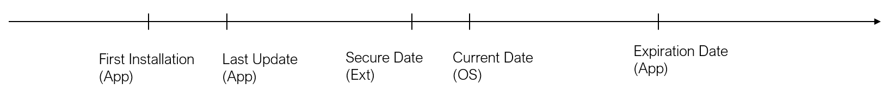

Shelf life Checks
General description
KOP4J gives the opportunity to inject different checks on the Android java environment.
Those checks are positioned in the code at the choice of the user.
The Shelf life check : consists to check the application expiration date
Warning
These checks must be inserted in classes that are direct or indirect subclasses of the class Context (e.g. Activity, ActivityGroup, Application, ContextWrapper...)
Security note
Security
Shelf life checks could impact a bit the performance.
It is important to apply those checks at the start-up of the app , but not only.
An hacker could try to by pass the check!
Then it could be smart to execute some checks during the runtime of the app or before some critical operation.
Protection Configuration
Without reaction selection
To inject a check in a method, the operator will set in the .pro file the check command followed by the method designator
Shelf life : -kop-shelf-life-check,expiration date:YYYY-MM-DD <classic method designator >
Example : -kop-shelf-life-check,date:2021-11-16 public class package.name.Main {public static void main(...);}
will inject a check that the date didn't passed the 16 november 2021
With reaction selection
KOP provides 4 reactions:
-
Immediate: if an anomaly is detected, the app fails immediately.
-kop-shelf-life-check,immediate <classic method designator >
-
Delayed-Strong: if an anomaly is detected, the app fails with a certain delay. This mechanism is described in Delayed Reaction chapter
-kop-shelf-life-check,delayed-strong <classic method designator >
-
Delayed: Same protection as the previous one, but less restrictive. This mechanism is described in Delayed Reaction chapter
-kop-shelf-life-check,delayed <classic method designator >
-
NoReaction: if an anomaly is detected, the app continues to run.
-kop-shelf-life-check,no-reaction <classic method designator >
If the reaction is not specified, KOP applies the immediate reaction.
Example : -kop-shelf-life-check,immediate,date:2021-11-16 public class package.name.Main {public static void main(...);}
will inject a check that the date didn't passed the 16 november 2021 and fail instantly if an anomaly is detected.
Note that it is equivalent to the first example as the default reaction is the immediate reaction.
With secureTimeField option for Shelf Life check
Shelf life check commands support a secureTimeField option that allows the user to provide a secureTime (from a server for example).
This field must :
- exist in classes provided to kop.
- be static and of primitive type long.
The field should be filled with
- -1 : when the application has no secureTime to provide to kop (when the device is offline for example).
- time_in_ms : when the application has a valid secureTime to provide. Time must be a number of milliseconds since Unix epoch January 1 1970)
Example
-kop-shelf-life-check,immediate,date:2020-06-06,secureTimeField:com.nagra.kop.demo.ui.login.LoginResult.securetimefield public class package.name.Main {public static void main(...);}
will inject :
- on date : a verification between the secureTime provided by the app and the device system time, if the user sets a valid value (i.e different from -1) in the field com.nagra.kop.demo.ui.login.LoginResult.securetimefield a verification . There is a grace-period of 2 days in order to handle a jet lag or a Daylight savings time
These fields must exist in appropriate class :
package com.nagra.kop.demo.ui.login;
public class LoginResult {
public static long securetimefield = 1622130349968L;
// ...
}
Error messages
K5 : The date for shelf life is not coherent.
K6 : The expiration Date could not be checked due to wrong package name.
How to analyze the shelf life check crash message
- Crash message format:
"K5 :
Current date in days since 1970, based on the device system time.
Expiration date in days since 1970.
Value”.
- How to read it :

XOR the Expired value with the Info1 value : Expiration date ^ Value = bitmap value
Then
| Bit position | Bit mask | Mask Hexa | Signification |
|---|---|---|---|
| 0 | 00000001b | 0x01 | Expiration Date < Current Date |
| 1 | 00000010b | 0x02 | Expiration Date < First installation Date |
| 2 | 00000100b | 0x04 | Expiration Date < Last update Date |
| 3 | 00001000b | 0x08 | Current Date < First installation Date |
| 4 | 00010000b | 0x10 | Current Date < Last Update Date |
| 5 | 00100000b | 0x20 | Current Date + 2 < SecureDate, If Secure Date is injected |